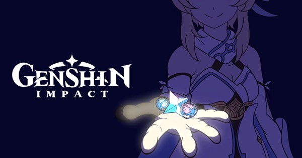
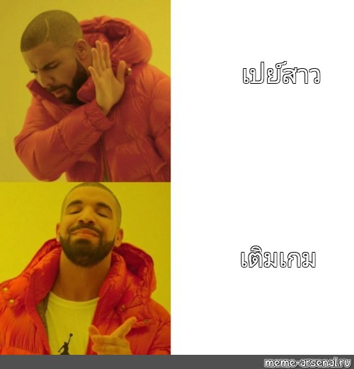

สวัสดีครับวันนี้ผมจะมากพูดถึงเรื่องการเติมเกมจากประสบการณ์ตรง ผมเป็นคนที่ชอบเล่นเกมมากๆไม่ว่าจะเป็นเกมบนมือถือ เกมคอมพิวเตอร์ การเติมเกมจะทำให้เราได้สิ่งของต่างๆในเกม เช่นสกิลที่ทำให้เราหล่อ เท่ขึ้น,ไอเทมให้เกมที่ทำให้ตัวละครเราเก่งขึ้น,รวมถึงตัวละครต่างๆ เพราะสื่งเหล่านี้ช่วยเพิ่มความสนุกและทำให้การเล่นเกมมีความหลากหลายมากขึ้น ในบทความนี้ผมจะมากเล่าประโยชน์และข้อควรระวังในการเติมเกมรวมถึงวิธีการเติมเกมอย่างปลอดภัยและมีประสิทธิภาพ

เกมต่างๆในปัจจุบันมักจะมีระบบหลายๆอย่างที่ทำให้เราอยากเติมเกมไม่ว่าจะเป็นสกิลที่สวยงาม ตัวละครที่ทำให้อยากได้ รวมถึงไอเทมที่ทำให้ตัวเราเก่งขึ้น โดนเกมที่ผมยังเล่นอยู่ในปัจจุบันก็มี genshin impact,honkai star rail,league of legends,digimon master online,opm the strongest โดยแต่ละเกมจะแยกประเภทและความคุ้มค่าในการเติมได้ดังนี้
เกมที่ขายสกิล
เกมกาชาที่มีกาชาให้เก็บฟรี
genshin impact
honkai star rail
opm the strongest
เกมกาชาที่ไม่มีกาชาให้เก็บฟรี
เกมแต่ประเภทที่กล่าวไปมีความคุ้มค่าในการเติมและความไม่คุ้มค่าต่างกันผมจะมาอธิบายให้ฟัง
เกมที่ขายสกิล
เกมประเภทนี้ไม่จำเป็นต้องเติมก็เล่นสนุกได้เพราะสกิลไม่ได้ทำให้ตัวละครเราเก่งขึ้น ตีแรงขึ้น แต่สกิลจะทำให้ตัวละครที่เราเล่นสวยหล่อขึ้น ถ้าสกิลไหนเราชอบมากๆ ก็สามรถเติมสุ่มได้เลย การเติมเกมประเภทนี้จะมีการบอกจำนวนเงินที่ชัดเจนเช่น สกิลละ 500 บาท ก็ใช้เงินแค่ 500 บาทก็ได้รับเลยไม่ต้องสุ่ม การเติมเกมประเภทนี้จะคุ้มที่สุดเพราะมีจำนวนเงินที้ชัดเจน
เกมกาชาที่มีกาชาให้เก็บฟรี
เกมประเภทนี้เป็นเกมกาชาที่สามารถเก็บตั๋วสุ่มกาชาได้ฟรีจากกิจกรรม หรือภารกิจประจำวันภายในเกม ถ้ามีความอดทนและความพยายามแต่เกมตัวอย่างที่ผมยกมาก็มีจำนวนตั๋วในการสุ่มและการันตีที่แตกต่างกันรวมถือจำนวนตั๋วที่ได้ในแต่ละเดือน ตัวอย่างเกม genshin impact และ honkai star rail เป็นเกมที่มาจากค่ายเดียวกันคือ mihoyo การันตีทอง 80 โรลมีโอกาศหลุดเรท 50/50 ถ้าหลุดแล้วอีก 80 โรลจะได้แน่ๆ ถ้าดวงซวยจะมีการันตี 160 โรล ในช่วงหนึ่งการอัปเดตหรือ 40 วันสามารถหาได้ 80 โรลแค่ถ้าดวงดีสามารถได้ตัวใหม่ตลอดๆทุกการอัปเดต เกมค่ายนนี้จะมีแพ็ค 179 บาทแต่ต้อง login 30 วัน ได้ประมาณ 19 โรล ซึ่งได้โรลเท่ากับแพ็ค 1800 บาทถ้าจะเติมค่ายนี้แนะนำ 179 บาทครับ ต่อมาเกม opm the strongest เกมนี้สามารถหาตั่วกาชาได้เดือนละ 80 ใบ การันตี 180 แต่ละค่าตั๋วสูงมากๆไม่มีแพ็คถูกๆไม่แนะนำให้เติมแนะนำให้ค่อยๆเล่น
เกมกาชาที่ไม่มีกาชาให้เก็บฟรี
เกมประเภทนี้เป็นเกมที่เหมาะกับพวกเงินเหลือเพราะเป็นเกมที่ถ้าอยากได้ต้องเติมเท่านั้นนและการันตีแพงมากโดย 1 ตัวมีการันตีอยู่ที่ประมาณ 50000 บาท ไม่แนะนำให้เติมอย่างสุดๆเพราะไม่คุ้มกันเงินที่เสียไป แนะนำให้ซื้อจากพ่อค้าในตลาดมากกว่าสุ่มเองเพราะจากตัวละ 50000 จะเหลือประมาณ 3000-10000 บาท แต่ต้องกลางดีๆไม่งั้นจะโดนโกงได้ ผมเคยเติมเกมนี้สุ่มไป 10000 บาทไม่ได้อะไรกลับมาเลยครับเกลือสุดๆ
โดยแต่ละเกมแต่ละประเภทที่กล่าวมาก็มีวิธีเติมให้ถูกกว่าราคาในเกมเช่นแพ็ต 179 บาทถ้าเติมเว็ปนอกที่น่าเชื่อถือเช่น richmanshop จะเหลือ 140 บาท ก็อยากแนะนำให้เติมเว็ปนอกมากกว่าเพราะถูกกว่ามาก จะเติมเกมก็ได้แต่อย่าให้ลำบากตัวเองผมเป็นคนที่ไม่ซี เรื่องเครื่องแต่งกาย เครื่องสำอาง ผมเลยเอาเงินส่วนนั้นมาถมกับเกมได้

การเติมเกม เติมได้แต่ควรพิจารณาความคุ้มค่าและงบประมาณที่มี เกมที่ขายสกินเช่น League of Legends มีความคุ้มค่ามากเพราะมีค่าใช้จ่ายที่ชัดเจน เกมกาชาที่มีกาชาให้เก็บฟรีเช่น Genshin Impact และ Honkai Star Rail มีแพ็คที่คุ้มมากๆ แต่เกมกาชาที่ไม่มีกาชาให้เก็บฟรีเช่น Digimon Master Online ไม่ควรเติมเงินมากๆ ดังนั้นการเติมเกมควรทำอย่างมีสติและเลือกใช้บริการจากแหล่งที่น่าเชื่อถือเพื่อลดค่าใช้จ่ายและหลีกเลี่ยงการถูกโกง เล่นเกมให้สนุกอย่าให้เกมเล่นเรา